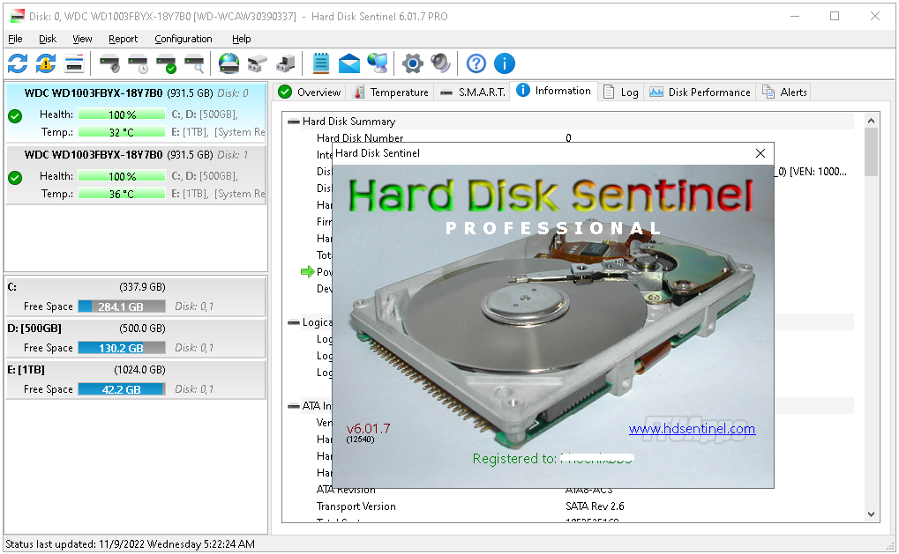

============================

Stats
Title: Hard Disk Sentinel Pro v6.01.7 Beta Multilingual Portable
Category: Apps
Type: PC Software
Language: English
Total size: 38.9 MB
Uploaded By: SunRiseZone
============================
Info:
!!! Remember I don't own or edit anything on links that might be on this torrent!!!
Visit >>> https://ftuapps.com/
Genuine cracked applications direct from the scene group.
A Team-FTU project!

Hard Disk Sentinel Pro v6.01.7 Beta Multilingual Portable
Hard Disk Sentinel (HDSentinel) is a multi-OS SSD and HDD monitoring and analysis software. Its goal is to find, test, diagnose and repair hard disk drive problems, report and display SSD and HDD health, performance degradations and failures. Hard Disk Sentinel gives complete textual description, tips and displays/reports the most comprehensive information about the hard disks and solid state disks inside the computer and in external enclosures (USB hard disks / e-SATA hard disks). Many different alerts and report options are available to ensure maximum safety of your valuable data.
No need to use separate tools to verify internal hard disks, external hard disks, SSDs, hybrid disk drives (SSHD), disks in RAID arrays and Network Attached Storage (NAS) drives as these are all included in a single software. In addition Hard Disk Sentinel Pro detects and displays status and S.M.A.R.T. information about LTO tape drives and appropriate industrial (micro) SD cards and eMMC devices too. See the How to: monitor Network Attached Storage (NAS) status for information about hard disk monitoring in Network Attached Storage (NAS) devices.
Hard Disk Sentinel monitors hard disk drive / HDD status including health, temperature and all S.M.A.R.T. (Self-Monitoring, Analysis and Reporting Technology) values for all hard disks. Also it measures the disk transfer speed in real time which can be used as a benchmark or to detect possible hard disk failures, performance degradations.
HDSentinel is the perfect data protection solution: it can be effectively used to prevent HDD failure and SSD / HDD data loss because it has the most sensitive disk health rating system which is extremely sensitive to disk problems. This way even a small HDD problem can't be missed. The Professional version has scheduled and automatic (on-problem) disk backup options to prevent data loss caused by not only failure but by malware or accidental delete also.
How does Hard Disk Sentinel work?
- Hard Disk Sentinel runs in the background and verifies SSD / HDD health status by inspecting the SMART status of the disk(s). If an error is found or unexpected behaviour is detected, it warns the user about the current situation and also can perform appropriate actions (for example, start an automatic backup).
- Usually, hard disk health status may slowly decline, from day to day. The SMART monitoring technology can predict HDD failure by examining the critical values of the disk drive. Compared to other software, Hard Disk Sentinel detects and reports every disk problem. It is much more sensitive to disk failures and can display better and more detailed information about hard disk expected life and the problems found (if any). This is a more sophisticated way to predict failures than the "traditional" method: checking S.M.A.R.T. attribute thresholds and values only. For more information, please read how hard disk S.M.A.R.T. works and why Hard Disk Sentinel is different.
- The software displays the current hard disk temperature and logs maximum and average HDD temperatures. This may be used to check the maximum temperature under high hard disk load. For the importance of the hard disk operating temperature, see the Frequently Asked Questions. See the list of Features of Hard Disk Sentinel Professional or our products for hard disk monitoring.
Version History:
- https://www.hdsentinel.com/revision.php
Software Requirements:
- Windows 95, 98, 98SE, ME, NT4, 2000, XP, 2003, 2008
- Vista, Windows 7, Windows Home Server, Windows 2012, Windows Server 2016, Windows 8, Windows 8.1, Windows 10, Windows 11, both 32bit and 64 bit versions (applicable)
- System administrator account (in service mode, it is possible to use without administrator rights and without even user logged in)
============================
Stats
Title: Hard Disk Sentinel Pro v6.01.7 Beta Multilingual Portable
Category: Apps
Type: PC Software
Language: English
Total size: 38.9 MB
Uploaded By: SunRiseZone
============================
Info:
!!! Remember I don't own or edit anything on links that might be on this torrent!!!
Visit >>> https://ftuapps.com/ Genuine cracked applications direct from the scene group. A Team-FTU project!

Hard Disk Sentinel Pro v6.01.7 Beta Multilingual Portable Hard Disk Sentinel (HDSentinel) is a multi-OS SSD and HDD monitoring and analysis software. Its goal is to find, test, diagnose and repair hard disk drive problems, report and display SSD and HDD health, performance degradations and failures. Hard Disk Sentinel gives complete textual description, tips and displays/reports the most comprehensive information about the hard disks and solid state disks inside the computer and in external enclosures (USB hard disks / e-SATA hard disks). Many different alerts and report options are available to ensure maximum safety of your valuable data. No need to use separate tools to verify internal hard disks, external hard disks, SSDs, hybrid disk drives (SSHD), disks in RAID arrays and Network Attached Storage (NAS) drives as these are all included in a single software. In addition Hard Disk Sentinel Pro detects and displays status and S.M.A.R.T. information about LTO tape drives and appropriate industrial (micro) SD cards and eMMC devices too. See the How to: monitor Network Attached Storage (NAS) status for information about hard disk monitoring in Network Attached Storage (NAS) devices. Hard Disk Sentinel monitors hard disk drive / HDD status including health, temperature and all S.M.A.R.T. (Self-Monitoring, Analysis and Reporting Technology) values for all hard disks. Also it measures the disk transfer speed in real time which can be used as a benchmark or to detect possible hard disk failures, performance degradations. HDSentinel is the perfect data protection solution: it can be effectively used to prevent HDD failure and SSD / HDD data loss because it has the most sensitive disk health rating system which is extremely sensitive to disk problems. This way even a small HDD problem can't be missed. The Professional version has scheduled and automatic (on-problem) disk backup options to prevent data loss caused by not only failure but by malware or accidental delete also. How does Hard Disk Sentinel work? - Hard Disk Sentinel runs in the background and verifies SSD / HDD health status by inspecting the SMART status of the disk(s). If an error is found or unexpected behaviour is detected, it warns the user about the current situation and also can perform appropriate actions (for example, start an automatic backup). - Usually, hard disk health status may slowly decline, from day to day. The SMART monitoring technology can predict HDD failure by examining the critical values of the disk drive. Compared to other software, Hard Disk Sentinel detects and reports every disk problem. It is much more sensitive to disk failures and can display better and more detailed information about hard disk expected life and the problems found (if any). This is a more sophisticated way to predict failures than the "traditional" method: checking S.M.A.R.T. attribute thresholds and values only. For more information, please read how hard disk S.M.A.R.T. works and why Hard Disk Sentinel is different. - The software displays the current hard disk temperature and logs maximum and average HDD temperatures. This may be used to check the maximum temperature under high hard disk load. For the importance of the hard disk operating temperature, see the Frequently Asked Questions. See the list of Features of Hard Disk Sentinel Professional or our products for hard disk monitoring. Version History: - https://www.hdsentinel.com/revision.php Software Requirements: - Windows 95, 98, 98SE, ME, NT4, 2000, XP, 2003, 2008 - Vista, Windows 7, Windows Home Server, Windows 2012, Windows Server 2016, Windows 8, Windows 8.1, Windows 10, Windows 11, both 32bit and 64 bit versions (applicable) - System administrator account (in service mode, it is possible to use without administrator rights and without even user logged in)